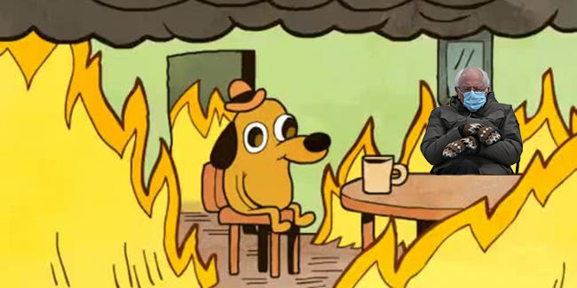

In this visual, I created a mashup between the This Is Fine meme and the Bernie Sanders Inauguration meme, I looked to create a conversation about the current political climate which is strongly shown by the calm of the dog in the chaos accompanied by Bernie Sanders who appears to be fairly situated too.
